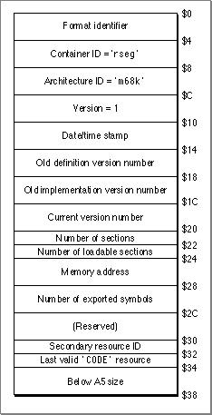

The 'rseg' 0 Resource
The'rseg'0resource is the resource loaded and retained by the Code Fragment Manager and is the fragment referenced from the'cfrg'0resource. Since the Code Fragment Manager does not release an "active" fragment, the'rseg'0resource does not contain the executable fragment, but only a small data structure. This structure specifies the location of the actual executable fragment as well as some additional information about the fragment. The actual executable fragment is stored in the'rseg'1resource, which can be released after the application launch procedures are completed. The'rseg'0resource contains a copy of the PEF container header from the'rseg'1resource along with other information, as shown in Figure 9-5. For more information about PEF headers, see "The Container Header," beginning on page 8-4.Figure 9-5 The
'rseg'0resource